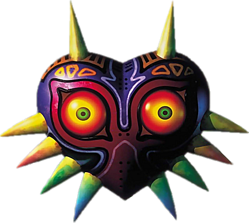
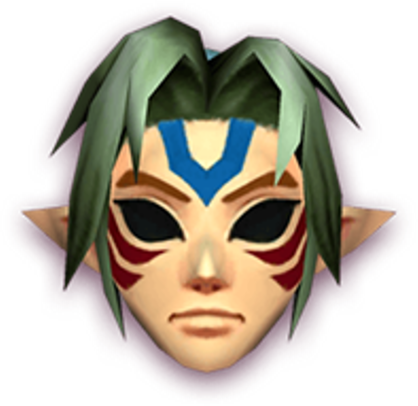
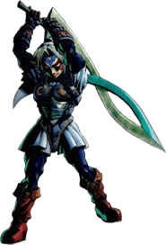

Origem da Majora's Mask.

The Legend of Zelda: Majora's Mask é um mergulho psicológico em um universo agonizante. Enquanto a Lua ameaça esmagar a terra de Termina, o verdadeiro perigo se esconde por trás de três grandes mistérios que a Nintendo deixou nas sombras.O primeiro é a Máscara de Majora, um artefato senciente usado por uma tribo antiga em rituais profanos, que atua como um demônio vivo alimentado pelo sofrimento alheio. Conduzindo essa trama está o Happy Mask Salesman, um vendedor bizarro que viaja além do tempo e do espaço, escondendo segredos terríveis e intenções duvidosas por trás de seu sorriso estático. Por fim, o mistério atinge o ápice com a Fierce Deity Mask, que concede a Link o poder de um deus guerreiro, mas traz o aviso perturbador de que sua magia pode ser tão sombria, maligna e perigosa quanto a da própria Majora
Mande Sua teoria
Origem da Majora's Mask.

Quem é a Fierce Deity mask.

Quem é Happy Salesman

A teoria de fãs mais famosa conecta a Máscara de Majora diretamente aos acontecimentos de Twilight Princess, defendendo que o objeto foi forjado pelos Dark Interlopers. Esse grupo de feiticeiros dominava uma magia negra proibida e tentou assumir o controle do Reino Sagrado, sendo posteriormente banido pelos Deuses para a dimensão do Reino do Crepúsculo, onde sofreram mutações e originaram a raça Twili. O principal argumento dos jogadores baseia-se na semelhança visual idêntica entre os olhos expressivos de Majora e os padrões geométricos entalhados na Fused Shadow, outro artefato de pura malícia. Essa forte conexão teológica e artística unifica o passado sombrio de Hyrule, sugerindo que a lendária tribo antiga mencionada em Termina pertencia a essa mesma facção de magos renegados e corrompidos.

A Fierce Deity Mask funciona como a contraparte exata de Majora e representa o poder de uma divindade antiga, brutal e imponente que habitava as terras de Termina. Seus poderes são tão avassaladores que as descrições no texto original em japonês a definem como um item amaldiçoado potencialmente mais perigoso e sombrio do que a própria vilã principal. Sua origem divide-se entre o mangá oficial, onde o Deus Feroz era um guerreiro viajante que usou a música para fazer o dragão Majora dançar até a exaustão no passado, e a intrigante teoria dos fãs. Esta hipótese afirma que a máscara nasceu das memórias puras de heroísmo de Link dentro da Lua, tendo sido moldada pela mente de Majora para que o garoto assumisse o papel de um monstro implacável em uma última brincadeira cruel de mocinho e bandido.
.png)
As teorias sobre o Happy Mask Salesman buscam explicar suas habilidades divinas e comportamento enigmático por meio de três visões principais. A primeira aponta que ele seria um sobrevivente da tribo antiga que criou a Máscara de Majora, justificando seu conhecimento sobre rituais e seu domínio sobre a magia de selar almas. A segunda sugere que ele é o verdadeiro vilão da história, tendo facilitado o roubo do artefato para que Link o purificasse, permitindo que ele recuperasse o objeto sem perigo no final. A última hipótese o define como uma entidade interdimensional ou o próprio Deus daquele mundo, o que explicaria sua capacidade de manipular o tempo, sumir no ar e o fato de as crianças dentro da Lua compartilharem a sua mesma aparência física.